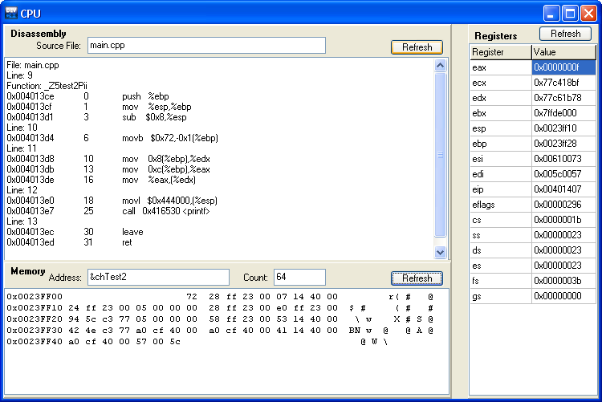

wxDev-C++ provides a CPU window to expert developers who want access to
the status of CPU registers, memory and instructions.
To show the CPU window, wait for a breakpoint or interruption to raise in
your program and go to the Debug menu, then click View CPU Window. A window similar to this will appear, but the memory pane will be blank:

On
the top left, you can find the assembler instructions of the current
function. You can display the assembler code of any other function by
typing its name in the Function field, then pressing the Enter key.
On the bottom left is the Memory pane, which you can use to display the contents of memory. You can view any accessible* area of memory. For example, say we want to see where the character chTest2 is stored. (You will need to step through the program and stop at line 12 to see this example). Type "&chTest2" into the address box and click "Refresh". The number '72' and the character 'r' will appear. This is the value of chTest2 in hexadecimal and as a character. Change count to 64 and refresh. Now you will see chTest2 and the following 63 bytes displayed, in hexadecimal in the left-hand block and the corresponding characters in the right-hand block. You can obtain the address where chTest2 was stored by reading off the address and counting columns to the first value (GDB converted what you typed in the address box to the numeric address, you are likely to see a different address to that shown here). You can directly type addresses in decimal ('2359047') or hexadecimal ('0x23FF07') format as well as indirectly ('&chTest2').
* Some memory areas are inaccessible and cannot be displayed.
On the right, are the contents of the CPU registers.